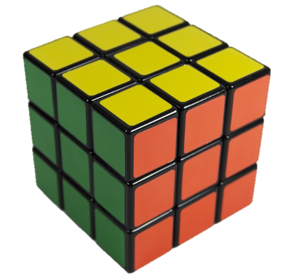

Math Games
Approved Math Game Websites
 During any free time you are welcome to play the following math games. You should not be playing any of these games without a teacher's permission or if you have any homework or classwork that needs to be completed. These games are great practice to improve basic skills or to practice new skills learned in the classroom.
Image reproduced with permission from Dreamstime.